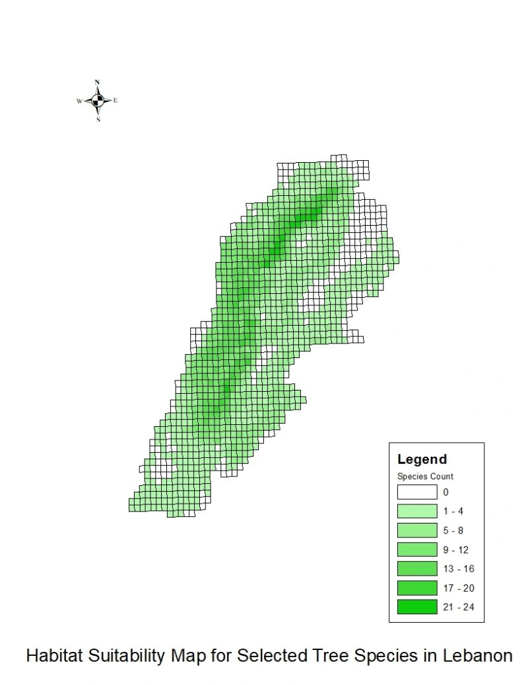

03 / Lebanon Reforestation Initiative · habitat suitability · Python
One map for choosing which native trees to plant where
The Lebanon Reforestation Initiative needed a single national map to guide species choice at planting sites. I integrated two datasets: the Important Plant Areas grid (observed species richness and endemism on a 3 × 3 km grid) and MaxEnt species-distribution models for 27 native tree species — models driven by elevation, moisture, solar radiation, bioclimate, precipitation and distance from the sea.
Working in ArcGIS with an arcpy (Python) script, I thresholded each species’ occurrence probability, converted the rasters to polygons, unioned them onto the grid, and computed the mean occurrence per cell — producing a “species count” layer: how many of the 27 species are likely to thrive in each cell. A correlation check against observed richness (Pearson r = 0.4) confirmed the integrated approach held together.
One of several GIS deliverables from a six-month reforestation internship with LRI (2024–25) — alongside the Al Ula habitat map and a post-conflict soil-contamination model for South Lebanon.
